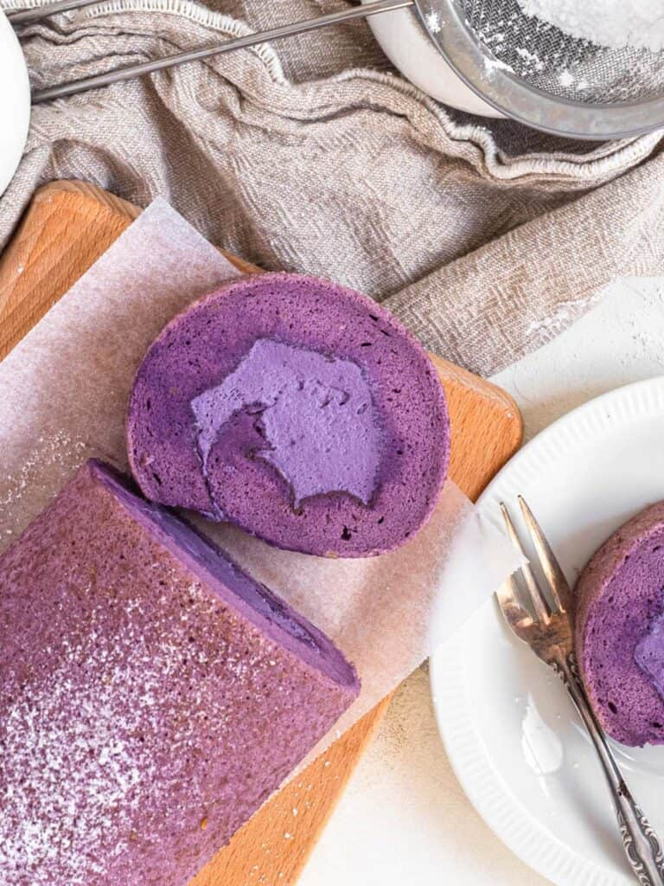

Ube Roll Cake

Recipe & picture by the amazing Catherine Zhang
"Light and fluffy sponge cake with a silky smooth cream filling.
This ube roll cake is stunningly purple and full of sweet ube flavour."
Ingredients
Cake
- 25 g White sugar (I)
- 60 g White sugar (II)
- 85 g Cake flour
- 4 Egg yolks
- 4 Egg whites
- 50 g Milk
- 50 g Vegetable oil
- 1/2 tsp Ube extract
Ube Cream
- 20 g Sugar
- 1/2 tsp Ube extract
- 1/2 tsp Vanilla extract
- 200 g Heavy cream
Steps
Cake
- Preheat the oven to 160C/320F and line a 25 x 30 cm pan (10 x 12 inches) with baking paper
- Heat the milk in a small saucepan until steaming
- Meanwhile, in a medium sized bowl whisk the egg yolks, oil, sugar (I) and ube extract together
- Slowly add the hot milk to the egg yolk mixture and whisk
- Sift the cake flour into the milk/yolk mix and whisk until combined
- In a large mixing bowl whisk the eggs and sugar (II) until stiff peaks
- Fold the meringue mixture into the yolk mixture ⅓rd at a time until just combined
- Pour into the lined cake tin and bake for 25 minutes
- Remove from the oven and invert onto a sheet of baking paper
- Remove the baking paper and replace with a clean kitchen towel
- Flip the cake so the towel is on the bottom and the baking paper is ontop
- Roll the cake from one short end to the other, place seam side down and allow to cool completely
Ube Cream
- In a medium sized bowl whip the thickened/heavy cream with sugar to soft peaks
- Add the vanilla and ube extract, continue whipping until medium-stiff peaks
Assembly
- Unroll the cake, then remove the baking paper and kitchen towel
- Spread the cream evenly over the cake, then roll following the curl of the cake
- Wrap the rolled cake in cling wrap and let rest in the fridge for minimum 2 hours
- Remove, dust with icing sugar and serve
Want more?